Goal of this contest is to predict the cherry tree bloom dates at four different locations in the next 10 years. I will first predict only this year’s bloom dates, using four different predictors in a linear regression:
For Vancouver, I have to proceed differently, because there exist no records of past bloom dates. I thus use the USA-NPN dataset (containing records of bloom dates in different years and different cities in the US) to model past Vancouver bloom dates. I then use this modeled data to predict future bloom dates.
To predict the bloom dates of the years 2024 - 2033, I will use predicted DRD dates, temperatures as well as the predicted temperature in March and April (macht das Sinn? Oder soll ich hier einfach direkt nur die früheren Jahre als Prädiktor nehmen?)
# setwd("/Users/lunafrauhammer/Library/CloudStorage/OneDrive-UniversitaetDuisburg-Essen/Sonstiges/CherryBlossom")
library(tidyverse)
library(data.table)
library(lubridate)
library(Metrics)
library(showtext)
library(sysfonts)
doy_to_date <- function (year, doy) {
strptime(paste(year, doy, sep = '-'), '%Y-%j') %>% # create date object
strftime('%Y-%m-%d') # translate back to date string in ISO 8601 format
}
cherry <- read.csv("peak-bloom-prediction-main/data/washingtondc.csv") %>%
bind_rows(read.csv("peak-bloom-prediction-main/data/liestal.csv")) %>%
bind_rows(read.csv("peak-bloom-prediction-main/data/kyoto.csv"))
cherry <- subset(cherry, year >= 1954)
# I will only use data from 1954 onwards because this is the year the weather
# data starts.
# Let's take a look at the historic bloom dates:
city_Colors<- c(kyoto = "lightpink1", liestal = "lightskyblue",
washingtondc = "palegreen3")
ggplot(cherry, aes(x = year, y = bloom_doy)) +
geom_text(label = "\u273F", aes(color = location),
size=4, family = "Arial Unicode MS", alpha = 1) +
# scale_color_discrete(name = "location") +
theme_classic() +
labs(x = "Year", y = "Full Blossom Day of the Year") +
geom_smooth(method = "lm", fullrange = TRUE, se = FALSE,
aes(color = location), show.legend = FALSE) +
# geom_smooth(method = "lm", fullrange = TRUE, aes(fill = location), alpha = 0.2,)
scale_color_manual(values=city_Colors, name = "Location",
labels = c("Kyoto", "Liestal-Weideli", "Washington, D.C.")) +
ggtitle("Historic Bloom Dates") +
theme(plot.title = element_text(face = "bold", hjust = 0.5)) 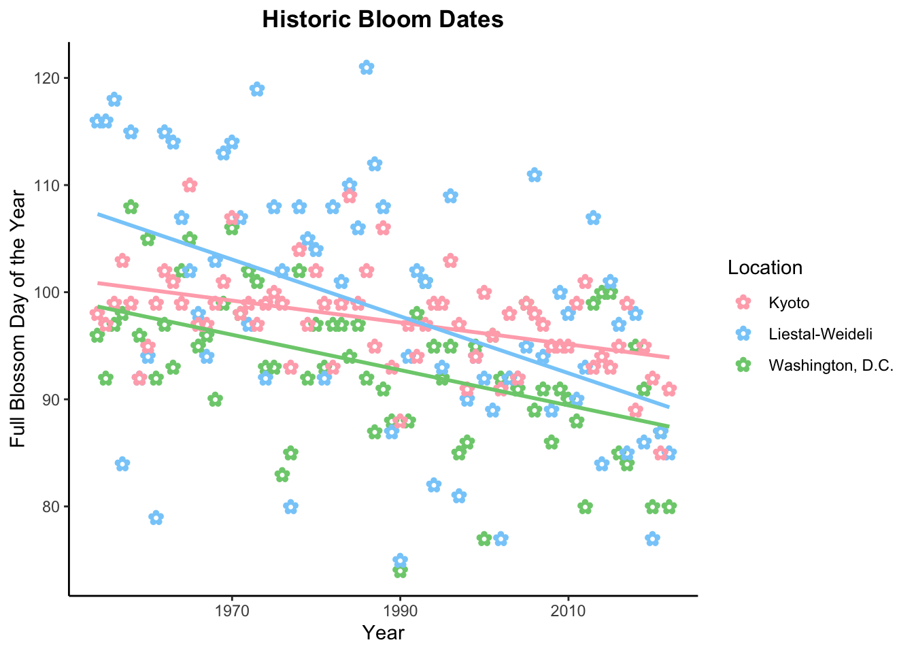
# ggsave("historicDates.png", p1)
# get the weather information:
library(rnoaa)
stations <- ghcnd_stations()
weatherWash <- ghcnd_search("USC00186350")
weatherLies <- ghcnd_search("GME00127786")
weatherKyot <- ghcnd_search("JA000047759")
weatherVan <- ghcnd_search("CA001108395")
weather <- rbind(weatherWash$tmax, weatherLies$tmax, weatherKyot$tmax,
weatherVan$tmax)
# I am using the maximum daily temperatures.
# Prepare data set:
weather$location <- NA
weather[weather$id == "USC00186350", ]$location <- "Washington"
weather[weather$id == "GME00127786", ]$location <- "Liestal"
weather[weather$id == "JA000047759", ]$location <- "Kyoto"
weather[weather$id == "CA001108395", ]$location <- "Vancouver"
weather$date <- as.Date(weather$date, "%Y/%m/%d")
weather$year <- year(weather$date)
weather$date.within <- format(weather$date, format="%m-%d")
weather$doy <- yday(weather$date) # day of the year In the first step, I only predict the 2023 bloom dates for those cities for which I have historic bloom data, i.e., Washington, Liestal, and Kyoto. Like stated above, I will use the historic bloom dates as well as each year’s DRD, modeled DRD temperature and mean January temperature as predictors.
The dormacy release date (DRD) is the day in late Winter / early Spring when the temperature trend reverses from going down to going up again. Since cherry blossoms need both periods of decreasing / colder and increasing / warmer temperatures to bloom, the DRD can be an important predictor of the cherry blossom bloom date (Chung et al., 2011).
In order to get each year’s DRD, I fit a quadratic regression on the temperatures between October 1st and March 31st. I then use the minimum of this function as estimation of the DRD.
# I first need a new yearly organizing variable that changes on October 1st
# instead of on January 1st:
weather$yearWinter <- NA
for(y in 1:nrow(weather)){
year.margin <- as.Date(paste(weather$year[y], "10-01", sep = "-"))
weather$yearWinter[y] <- ifelse(weather$date[y] >= year.margin,
weather$year[y] + 1, weather$year[y])
}
# I then exclude all data points that lie in between May and October because
# I don't need them
weather <- weather[!(month(weather$date) %in% c(5:9)), ]
# I now add a new DOY variable with negative numbers from October 1st to
# December 31st
weather$doy.n <- 0
for(y in unique(weather$yearWinter)){
weather[weather$yearWinter == y & weather$location == "Washington", ]$doy.n <-
seq(-91, by = 1, length.out = nrow(weather[weather$yearWinter == y &
weather$location == "Washington", ]))
weather[weather$yearWinter == y & weather$location == "Liestal", ]$doy.n <-
seq(-91, by = 1, length.out = nrow(weather[weather$yearWinter == y &
weather$location == "Liestal", ]))
weather[weather$yearWinter == y & weather$location == "Kyoto", ]$doy.n <-
seq(-91, by = 1, length.out = nrow(weather[weather$yearWinter == y &
weather$location == "Kyoto", ]))
weather[weather$yearWinter == y & weather$location == "Vancouver", ]$doy.n <-
seq(-91, by = 1, length.out = nrow(weather[weather$yearWinter == y &
weather$location == "Vancouver", ]))
}
# I now estimate the DRDs.
# Illustration for the year 2022 in Liestal:
temp22 <- subset(weather, location == "Liestal" & yearWinter == 2022)
fit22 <- lm(tmax ~ doy.n + I(doy.n^2), temp22)
coefs22 <- coef(fit22)
doy.p <- -91: nrow(temp22) - 92
fit.p <- predict(fit22, newdata = data.frame(doy.n = doy.p))
fun22 <- function(x){
coefs22[1] + coefs22[2]*x + coefs22[3]*x^2
}
DRD22 <- as.numeric(optimize(fun22, interval = c(1, 365), maximum = FALSE)[1])
with(temp22, plot(tmax ~ doy.n, ylab = "Maximum Temperature (1/10 °Celsius)",
xlab = "Day of the Year", pch = 19, cex = 0.8, bty = "L",
main = "Illustration: 2022 DRD in Liestal"))
lines(fit.p ~ doy.p, col = "forestgreen", lwd = 2)
abline(v = DRD22, col = "red")
text(DRD22 +1, 220, "Dormacy Release Date", cex = 0.6, col = "red", pos = 4)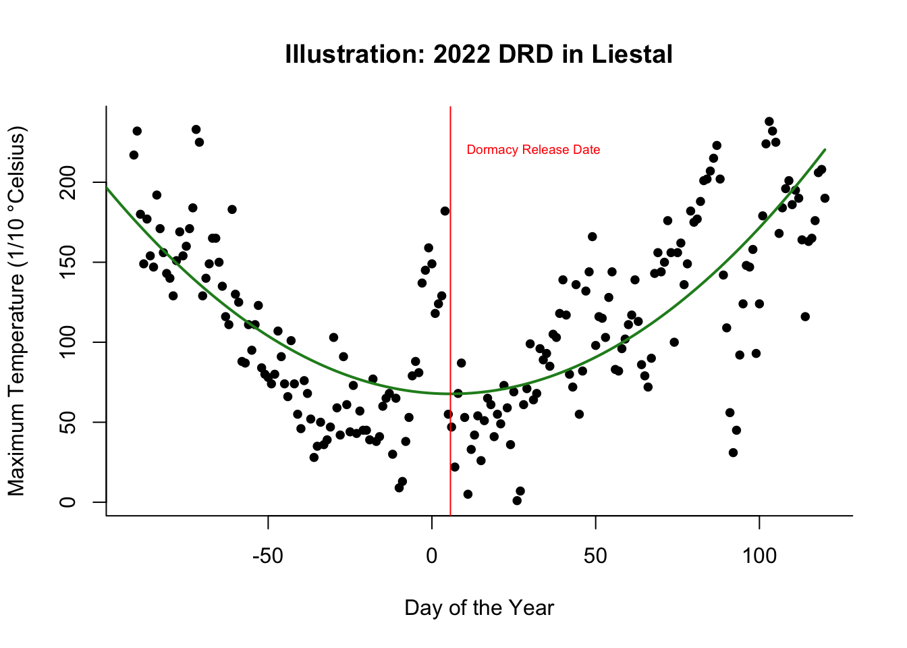
Now, I model the DRD for each year in the temperature data set for each of the three locations.
for(l in c("Washington", "Liestal", "Kyoto", "Vancouver")){
DRD <- year <- DRD.t.pred <- NULL
weather_Loc <- subset(weather, location == l)
for(y in 1:(length(unique(weather_Loc$yearWinter))-1)){
year.y <- unique(weather_Loc$yearWinter)[y]
temp.year <- weather_Loc[weather_Loc$yearWinter == year.y, ]
if(nrow(temp.year) > 200){ # not all years are complete
coefs <- coef(lm(tmax ~ doy.n + I(doy.n^2), temp.year))
fun <- function(x){
coefs[1] + coefs[2]*x + coefs[3]*x^2
}
DRD[y] <- as.numeric(optimize(fun, interval = c(-91, 200),
maximum = FALSE)[1])
year[y] <- unique(weather_Loc$yearWinter)[y]
DRD.t.pred[y] <- as.numeric(optimize(fun, interval = c(-91, 200),
maximum = FALSE)[2]) / 10
}
}
assign(paste("DRD_", l, sep = ""), DRD)
assign(paste("DRD.t.pred_", l, sep = ""), DRD.t.pred)
assign(paste("year_", l, sep = ""), year)
}
temp_Wash <- data.frame(year = year_Washington, DRD = DRD_Washington,
t.pred = DRD.t.pred_Washington)
# boxplot.stats(temp_Wash$DRD)$out
temp_Lies <- data.frame(year = year_Liestal, DRD = DRD_Liestal,
t.pred = DRD.t.pred_Liestal)
# boxplot.stats(temp_Wash$DRD)$out
temp_Kyot <- data.frame(year = year_Kyoto, DRD = DRD_Kyoto,
t.pred = DRD.t.pred_Kyoto)
# boxplot.stats(temp_Kyot$DRD)$out
temp_Vanc <- data.frame(year = year_Vancouver, DRD = DRD_Vancouver,
t.pred = DRD.t.pred_Vancouver)
# boxplot.stats(temp_Vanc$DRD)$out
temp <- rbind(temp_Wash, temp_Lies, temp_Kyot, temp_Vanc)
temp$location <- rep(c("Washington", "Liestal", "Kyoto", "Vancouver"),
c(nrow(temp_Wash), nrow(temp_Lies), nrow(temp_Kyot),
nrow(temp_Vanc)))
ggplot(temp, aes(x = year, y = DRD)) +
geom_point() +
ylim(-5, 30) +
facet_grid(~location) +
geom_smooth(method = "lm", se = FALSE, fullrange = TRUE) +
ylab("Estimated DRD") +
xlab("Year") +
ggtitle("Historic DRDs") +
theme(plot.title = element_text(face = "bold", hjust = 0.5)) ## `geom_smooth()` using formula = 'y ~ x'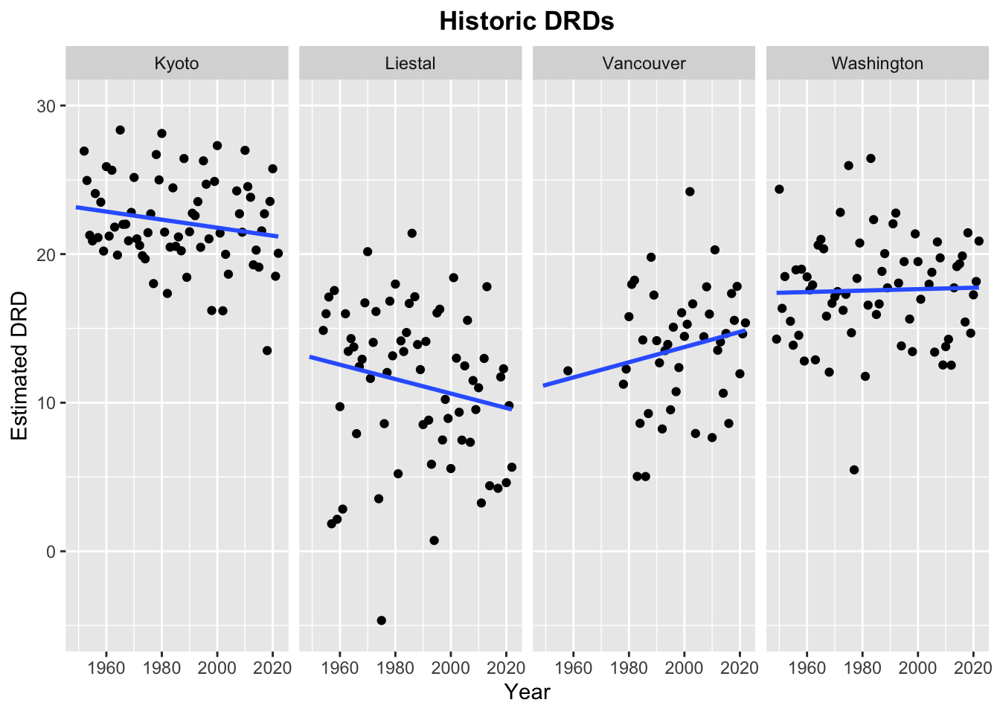
ggplot(temp, aes(x = year, y = t.pred)) +
geom_point() +
facet_grid(~location) +
geom_smooth(method = "lm", se = FALSE, fullrange = TRUE) +
ylim(-5, 15) +
ylab("Modeled temperature at DRD (°C)") +
xlab("Year") +
ggtitle("Historic DRD Temperatures") +
theme(plot.title = element_text(face = "bold", hjust = 0.5)) ## `geom_smooth()` using formula = 'y ~ x'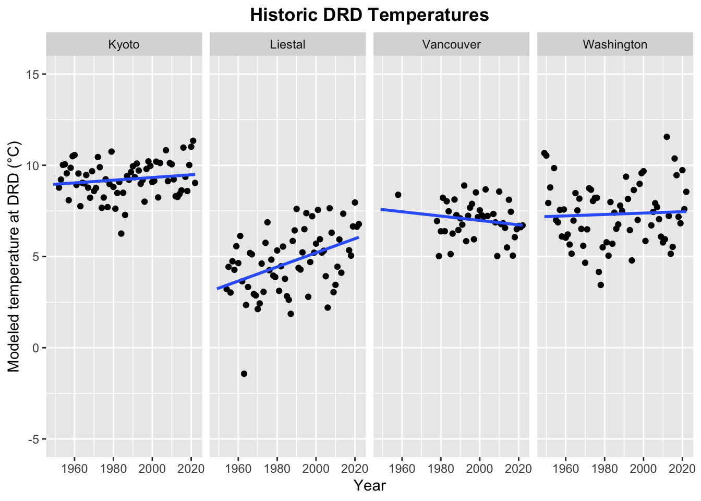
As an additional predictor, I will use each year’s mean temperature in January. In the following steps, I get this data from the historic weather data set.
## Washington, D.C.
mean.jan_Wash <- NULL
year_Wash <- NULL
weather_Wash <- subset(weather, location == "Washington")
weather_Wash_jan <- subset(weather_Wash, month(date) == 1)
for(y in 1:(length(unique(weather_Wash_jan$yearWinter))-1)){
year <- unique(weather_Wash_jan$yearWinter)[y]
mean.jan_Wash[y] <- mean(weather_Wash_jan[weather_Wash_jan$yearWinter == year,
]$tmax,na.rm = TRUE) / 10
year_Wash[y] <- year
}
jan_Wash <- data.frame(mean.jan = mean.jan_Wash, year = year_Wash)
## Liestal:
mean.jan_Lies <- NULL
year_Lies <- NULL
weather_Lies <- subset(weather, location == "Liestal")
weather_Lies_jan <- subset(weather_Lies, month(date) == 1)
for(y in 1:(length(unique(weather_Lies_jan$yearWinter))-1)){
year <- unique(weather_Lies_jan$yearWinter)[y]
mean.jan_Lies[y] <- mean(weather_Lies_jan[weather_Lies_jan$yearWinter == year,
]$tmax,na.rm = TRUE) / 10
year_Lies[y] <- year
}
jan_Lies <- data.frame(mean.jan = mean.jan_Lies, year = year_Lies)
## Kyoto:
mean.jan_kyot <- NULL
year_kyot <- NULL
weather_kyot <- subset(weather, location == "Kyoto")
weather_kyot_jan <- subset(weather_kyot, month(date) == 1)
for(y in 1:(length(unique(weather_kyot_jan$yearWinter))-1)){
year <- unique(weather_kyot_jan$yearWinter)[y]
mean.jan_kyot[y] <- mean(weather_kyot_jan[weather_kyot_jan$yearWinter == year,
]$tmax,na.rm = TRUE) / 10
year_kyot[y] <- year
}
jan_Kyot <- data.frame(mean.jan = mean.jan_kyot, year = year_kyot)
## Vancouver:
mean.jan_Vanc <- NULL
year_Vanc <- NULL
weather_Vanc <- subset(weather, location == "Vancouver")
weather_Vanc_jan <- subset(weather_Vanc, month(date) == 1)
for(y in 1:(length(unique(weather_Vanc_jan$yearWinter))-1)){
year <- unique(weather_Vanc_jan$yearWinter)[y]
mean.jan_Vanc[y] <- mean(weather_Vanc_jan[weather_Vanc_jan$yearWinter == year,
]$tmax,na.rm = TRUE) / 10
year_Vanc[y] <- year
}
jan_Vanc <- data.frame(mean.jan = mean.jan_Vanc, year = year_Vanc)
temp_Wash <- merge(temp_Wash, jan_Wash, by = "year")
temp_Lies <- merge(temp_Lies, jan_Lies, by = "year")
temp_Kyot <- merge(temp_Kyot, jan_Kyot, by = "year")
temp_Vanc <- merge(temp_Vanc, jan_Vanc, by = "year")
temp <- rbind(temp_Wash, temp_Lies, temp_Kyot, temp_Vanc)
temp$location <- rep(c("Washington", "Liestal", "Kyoto", "Vancouver"),
c(nrow(temp_Wash), nrow(temp_Lies), nrow(temp_Kyot),
nrow(temp_Vanc)))
ggplot(temp, aes(x = year, y = mean.jan)) +
geom_point() +
facet_grid(~location) +
geom_smooth(method = "lm", se = FALSE, fullrange = TRUE) +
ylim(-5, 15) +
ylab("Mean January temperature (°C)") +
xlab("Year") +
ggtitle("Historic Mean January Temperatures") +
theme(plot.title = element_text(face = "bold", hjust = 0.5)) ## `geom_smooth()` using formula = 'y ~ x'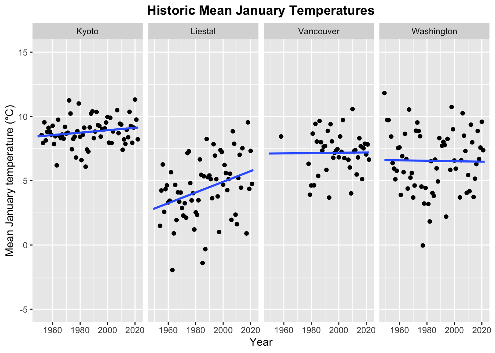
Before I can estimate the 2023 bloom dates, I need to estimate this year’s DRD. However, the ghcnd weather data ends in fall 2022, so I looked for more current temperature data online and retrieved free temperature data from https://www.visualcrossing.com. These data sets include the weather data between 10/01/2022 and 02/01/2023 for each city.
The problem here is that, at the moment, I only have the temperature data until 02/01 which isn’t really late enough to sensibly model the DRD (especially for Kyoto, but to some extent also for the other locations). I hope that this issue will resolve when I repeat the calculation at the end of Febuary with updated temperature data (visualcrossing even offers forecast data if it should still not suffice).
Wash_2023 <- read.csv("peak-bloom-prediction-main/data/WeatherWashington_2023.csv", sep = ",", header = TRUE)
# check whether both data sources match:
wGHCN <- subset(weather, location == "Washington" &
date >= as.Date("2022-10-01") & date <=
as.Date("2022-10-31"))$tmax / 10
wVC <- subset(Wash_2023, as.Date(datetime) >= as.Date("2022-10-01") & as.Date(datetime) <= as.Date("2022-10-31"))$tempmax
cor(wGHCN, wVC, use = "complete.obs") # correlation is pretty low!## [1] 0.4456917# TODO look into this
Wash_2023$doy <- yday(as.Date(Wash_2023$datetime))
Wash_2023$doy.n <- -91:32
Wash_2023$tmax <- Wash_2023$tempmax
# the problem is that I have to little 2023 data to sensibly model the DRD. I will
# thus use the last 10 years' mean temperature data between March and June to
# improve the DRD prediction. However, these values will be weighted less strongly
# than the actually observed temperature data.
yday(as.Date("2023-03-01")) ## [1] 60yday(as.Date("2023-06-01"))## [1] 152# I get the 60th - 152nd days of the year; for leap years this is Feb 29th - May 31st,
# for other years it is March 1st - June 1st.
# I now get the mean temperature of the last 10 years for all of these days:
mw_Wash <- subset(aggregate(tmax ~ doy, subset(weather_Wash, year >= 2013), mean),
doy %in% 33:152)
mw_Wash$tmax <- mw_Wash$tmax / 10
w23_Wash <- Wash_2023[, c("doy.n", "tmax")]
names(mw_Wash) <- c("doy.n", "tmax")
w_Wash <- rbind(w23_Wash, mw_Wash)
# fit quadratic regression with specified weights:
weights <- rep(c(1, 0.2), c(124, 89))
fit23_Wash <- lm(tmax ~ doy.n + I(doy.n^2), w_Wash, weights = weights)
coefs23_Wash <- coef(fit23_Wash)
doy.p <- -91: 152
fit.p_Wash <- predict(fit23_Wash, newdata = data.frame(doy.n = doy.p))
fun23_Wash <- function(x){
coefs23_Wash[1] + coefs23_Wash[2]*x + coefs23_Wash[3]*x^2
}
DRD23_Wash <- as.numeric(optimize(fun23_Wash, interval = c(1, 365),
maximum = FALSE)[1])
t.DRD23_Wash <- w_Wash[w_Wash$doy.n == round(DRD23_Wash), ]$tmax
tpred23_Wash <- as.numeric(optimize(fun23_Wash, interval = c(1, 365),
maximum = FALSE)[2])
with(subset(w_Wash, doy.n <= 60),
plot(tmax ~ doy.n, ylab = "Maximum Temperature (°Celsius)",
xlab = "Day of the Year", pch = 19, cex = 0.8,
xlim = c(-91, 150), bty = "L",
main = "Predicted 2023 DRD: Washington, D.C."))
with(subset(w_Wash, doy.n > 60),
points(tmax ~ doy.n, pch = 19, col = alpha("grey", alpha = 0.8)))
lines(fit.p_Wash ~ doy.p, col = "forestgreen", lwd = 2)
abline(v = DRD23_Wash, col = "red")
text(DRD23_Wash, 20, "Dormacy Release Date", cex = 0.6, col = "red", pos = 4)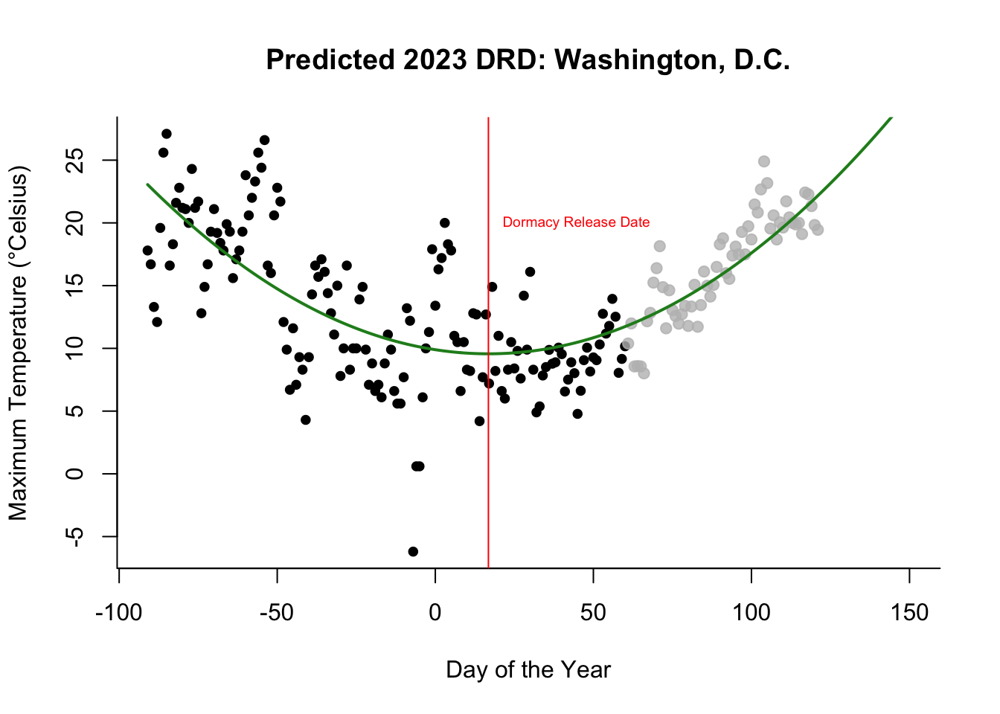
DRD_Wash <- c(DRD_Washington, DRD23_Wash)
t.pred_Wash <- c(temp_Wash$t.pred, tpred23_Wash)
# Calculate mean January temperature
j23_Wash <- mean(subset(Wash_2023, as.Date(datetime) >= as.Date("2023-01-01") &
as.Date(datetime) <= as.Date("2023-01-31"))$tempmax) Lies_2023 <- read.csv("peak-bloom-prediction-main/data/WeatherLiestal_2023.csv",
sep = ",", header = TRUE)
# check whether both data sources match:
wGHCN <- subset(weather, location == "Liestal" &
date >= as.Date("2022-10-01"))$tmax / 10
wVC <- subset(Lies_2023, as.Date(datetime) >= as.Date("2022-10-01") &
as.Date(datetime) <= as.Date("2022-10-31"))$tempmax
cor(wGHCN, wVC) # very high correlation -> looks good!## [1] 0.9794612Lies_2023$doy <- yday(as.Date(Lies_2023$datetime))
Lies_2023$doy.n <- -91:32
Lies_2023$tmax <- Lies_2023$tempmax
mw_Lies <- subset(aggregate(tmax ~ doy, subset(weather_Lies, year >= 2013), mean),
doy %in% 33:152)
mw_Lies$tmax <- mw_Lies$tmax / 10
w23_Lies <- Lies_2023[, c("doy.n", "tmax")]
names(mw_Lies) <- c("doy.n", "tmax")
w_Lies <- rbind(w23_Lies, mw_Lies)
# fit quadratic regression with specified weights:
weights <- rep(c(1, 0.2), c(124, 89))
fit23_Lies <- lm(tmax ~ doy.n + I(doy.n^2), w_Lies, weights = weights)
coefs23_Lies <- coef(fit23_Lies)
doy.p <- -91: 152
fit.p_Lies <- predict(fit23_Lies, newdata = data.frame(doy.n = doy.p))
fun23_Lies <- function(x){
coefs23_Lies[1] + coefs23_Lies[2]*x + coefs23_Lies[3]*x^2
}
DRD23_Lies <- as.numeric(optimize(fun23_Lies, interval = c(1, 365),
maximum = FALSE)[1])
t.DRD23_Lies <- w_Lies[w_Lies$doy.n == round(DRD23_Lies), ]$tmax
tpred23_Lies <- as.numeric(optimize(fun23_Lies, interval = c(1, 365),
maximum = FALSE)[2])
with(subset(w_Lies, doy.n <= 60),
plot(tmax ~ doy.n, ylab = "Maximum Temperature (°Celsius)",
xlab = "Day of the Year", pch = 19, cex = 0.8,
xlim = c(-91, 150), bty = "L",
main = "Predicted 2023 DRD: Liesington, D.C."))
with(subset(w_Lies, doy.n > 60),
points(tmax ~ doy.n, pch = 19, col = alpha("grey", alpha = 0.8)))
lines(fit.p_Lies ~ doy.p, col = "forestgreen", lwd = 2)
abline(v = DRD23_Lies, col = "red")
text(DRD23_Lies, 20, "Dormacy Release Date", cex = 0.6, col = "red", pos = 4)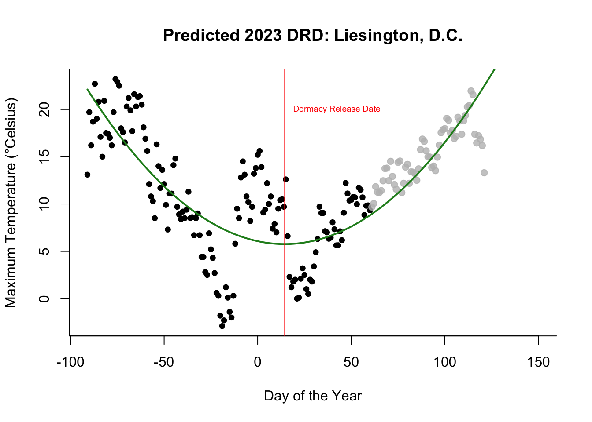
DRD_Lies <- c(DRD_Liestal, DRD23_Lies)
t.pred_Lies <- c(temp_Lies$t.pred, tpred23_Lies)
# Calculate mean January temperature:
j23_Lies <- mean(subset(Lies_2023, as.Date(datetime) >= as.Date("2023-01-01") &
as.Date(datetime) <= as.Date("2023-01-31"))$tempmax) Der Wert für Kyoto macht keinen Sinn, ich gehe aber davon aus, dass das Modell deutlich besser sein wird, wenn ich es Ende Februar nochmal mit den aktuellen Temperaturdaten wiederhole
Kyot_2023 <- read.csv("peak-bloom-prediction-main/data/WeatherKyoto_2023.csv",
sep = ",", header = TRUE)
# check whether both data sources match:
wGHCN <- subset(weather, location == "Kyoto" &
date >= as.Date("2022-10-01") & date <=
as.Date("2022-10-31"))$tmax / 10
wVC <- subset(Kyot_2023, as.Date(datetime) >= as.Date("2022-10-01") &
as.Date(datetime) <= as.Date("2022-10-31"))$tempmax
cor(wGHCN, wVC, use = "complete.obs") # very high correlation -> no problem!## [1] 0.9717502Kyot_2023$doy <- yday(as.Date(Kyot_2023$datetime))
Kyot_2023$doy.n <- -91:32
Kyot_2023$tmax <- Kyot_2023$tempmax
weather_Kyot <- weather_kyot
mw_Kyot <- subset(aggregate(tmax ~ doy, subset(weather_Kyot, year >= 2013), mean),
doy %in% 33:152)
mw_Kyot$tmax <- mw_Kyot$tmax / 10
w23_Kyot <- Kyot_2023[, c("doy.n", "tmax")]
names(mw_Kyot) <- c("doy.n", "tmax")
w_Kyot <- rbind(w23_Kyot, mw_Kyot)
# fit quadratic regression with specified weights:
weights <- rep(c(1, 0.2), c(124, 89))
fit23_Kyot <- lm(tmax ~ doy.n + I(doy.n^2), w_Kyot, weights = weights)
coefs23_Kyot <- coef(fit23_Kyot)
doy.p <- -91: 152
fit.p_Kyot <- predict(fit23_Kyot, newdata = data.frame(doy.n = doy.p))
fun23_Kyot <- function(x){
coefs23_Kyot[1] + coefs23_Kyot[2]*x + coefs23_Kyot[3]*x^2
}
DRD23_Kyot <- as.numeric(optimize(fun23_Kyot, interval = c(1, 365),
maximum = FALSE)[1])
t.DRD23_Kyot <- w_Kyot[w_Kyot$doy.n == round(DRD23_Kyot), ]$tmax
tpred23_Kyot <- as.numeric(optimize(fun23_Kyot, interval = c(1, 365),
maximum = FALSE)[2])
with(subset(w_Kyot, doy.n <= 60),
plot(tmax ~ doy.n, ylab = "Maximum Temperature (°Celsius)",
xlab = "Day of the Year", pch = 19, cex = 0.8,
xlim = c(-91, 150), bty = "L",
main = "Predicted 2023 DRD: Kyotington, D.C."))
with(subset(w_Kyot, doy.n > 60),
points(tmax ~ doy.n, pch = 19, col = alpha("grey", alpha = 0.8)))
lines(fit.p_Kyot ~ doy.p, col = "forestgreen", lwd = 2)
abline(v = DRD23_Kyot, col = "red")
text(DRD23_Kyot, 20, "Dormacy Release Date", cex = 0.6, col = "red", pos = 4)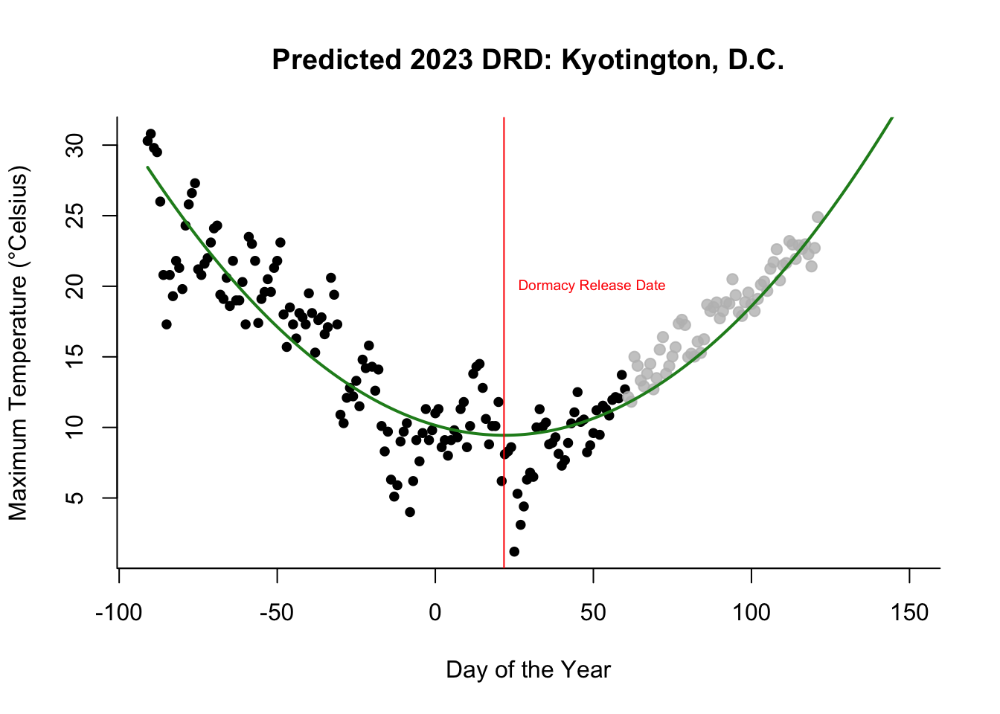
DRD_Kyot <- c(DRD_Kyoto, DRD23_Kyot)
t.pred_Kyot <- c(temp_Kyot$t.pred, tpred23_Kyot)
# Calculate mean January temperature
# 2023:
j23_Kyot <- mean(subset(Kyot_2023, as.Date(datetime) >= as.Date("2023-01-01") &
as.Date(datetime) <= as.Date("2023-01-31"))$tempmax) After modeling the DRDs, DRD temperatures, and calculating each year’s mean January temperature, I can now predict the 2023 bloom dates. I do this seperately for each city since I want to consider the goodness of fit indices for all cities.
cherry_Wash <- subset(cherry, location == "washingtondc")
# now use data from temperature data set: temp_Lies
dat_Wash <- merge(cherry_Wash, temp_Wash, by = "year")
### Different Models
mYearW <- lm(bloom_doy ~ year, dat_Wash)
# summary(mYearW) # R^2 = 0.21
mDRDW <- lm(bloom_doy ~ DRD, dat_Wash)
# summary(mDRDW) # R^2 = 0.10
mtpredW <- lm(bloom_doy ~ t.pred, dat_Wash)
# summary(mtpredW) # R^2 = 0.13
mjanW <- lm(bloom_doy ~ mean.jan, dat_Wash)
# summary(mjanW) # R^2 < .01
mAllW <- lm(bloom_doy ~ year + DRD + t.pred + mean.jan, dat_Wash)
summary(mAllW) # R^2 = 0.53 -> I will take this model!##
## Call:
## lm(formula = bloom_doy ~ year + DRD + t.pred + mean.jan, data = dat_Wash)
##
## Residuals:
## Min 1Q Median 3Q Max
## -9.7936 -3.2781 -0.1656 2.8032 9.3586
##
## Coefficients:
## Estimate Std. Error t value Pr(>|t|)
## (Intercept) 355.02299 59.45884 5.971 1.52e-07 ***
## year -0.13102 0.03013 -4.348 5.61e-05 ***
## DRD 0.67743 0.17239 3.930 0.000229 ***
## t.pred -2.62054 0.54149 -4.840 1.00e-05 ***
## mean.jan 0.90523 0.37986 2.383 0.020467 *
## ---
## Signif. codes: 0 '***' 0.001 '**' 0.01 '*' 0.05 '.' 0.1 ' ' 1
##
## Residual standard error: 4.725 on 58 degrees of freedom
## Multiple R-squared: 0.5243, Adjusted R-squared: 0.4915
## F-statistic: 15.98 on 4 and 58 DF, p-value: 7.122e-09plot(bloom_doy ~ year, dat_Wash, cex = 0.5, pch = 19,
ylab = "Full Bloom Day of the Year", bty = "L",
xlab = "Year", main = "Best Predictor for Washington, D.C.: Year")
abline(mYearW)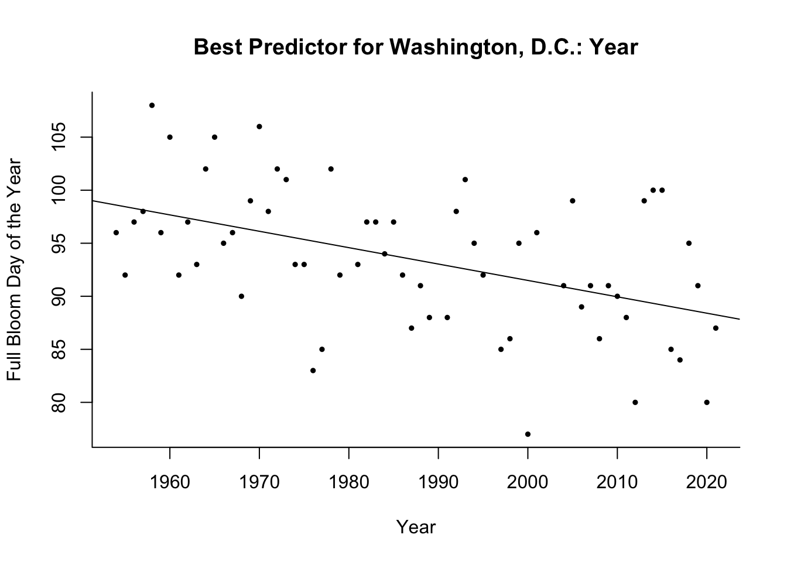
# check prediction accuracy:
pbloomW <- predict(mAllW, newdata = data.frame(year = dat_Wash$year,
DRD = dat_Wash$DRD, t.pred = dat_Wash$t.pred, mean.jan = dat_Wash$t.pred))
rmse(dat_Wash$bloom_doy, pbloomW) # 4.68## [1] 4.809874mae(dat_Wash$bloom_doy, pbloomW) # 3.81## [1] 3.923448cor(dat_Wash$bloom_doy, pbloomW) # 0.70## [1] 0.6907424### Predict Bloom Date 2023
data23_Wash <- data.frame(year = 2023, DRD = DRD23_Wash, t.pred = tpred23_Wash,
mean.jan = j23_Wash)
predict(mAllW, newdata = data23_Wash) # 86.27## 1
## 86.26796doy_to_date(2023, 86)## [1] "2023-03-27"My prediction for Washington is March 27th 2023
cherry_lies <- subset(cherry, location == "liestal")
# now use data from temperature data set: temp_Lies
dat_lies <- merge(cherry_lies, temp_Lies, by = "year")
mYearL <- lm(bloom_doy ~ year, dat_lies)
# summary(mYearL) # R^2 = 0.25
mDRDL <- lm(bloom_doy ~ DRD, dat_lies)
# summary(mDRDL) # R^2 = 0.23
mtpredL <- lm(bloom_doy ~ t.pred, dat_lies)
# summary(mtpredL) # R^2 = 0.51
mjanL <- lm(bloom_doy ~ mean.jan, dat_lies)
# summary(mjanL) # R^2 = 0.06
mAllL <- lm(bloom_doy ~ year + DRD + t.pred + mean.jan, dat_lies)
# summary(mAllL) # R^2 = 0.69
mAllL2 <- lm(bloom_doy ~ year + DRD * t.pred + mean.jan, dat_lies)
summary(mAllL2) # R^2 = 0.72 -> I will take this model. ##
## Call:
## lm(formula = bloom_doy ~ year + DRD * t.pred + mean.jan, data = dat_lies)
##
## Residuals:
## Min 1Q Median 3Q Max
## -17.3621 -4.1338 0.4921 3.8473 18.7566
##
## Coefficients:
## Estimate Std. Error t value Pr(>|t|)
## (Intercept) 354.24029 90.72336 3.905 0.000242 ***
## year -0.13583 0.04578 -2.967 0.004313 **
## DRD 2.21400 0.56740 3.902 0.000244 ***
## t.pred -0.84575 1.53921 -0.549 0.584724
## mean.jan 1.45242 0.45923 3.163 0.002452 **
## DRD:t.pred -0.27454 0.10238 -2.682 0.009451 **
## ---
## Signif. codes: 0 '***' 0.001 '**' 0.01 '*' 0.05 '.' 0.1 ' ' 1
##
## Residual standard error: 6.475 on 60 degrees of freedom
## Multiple R-squared: 0.7227, Adjusted R-squared: 0.6996
## F-statistic: 31.27 on 5 and 60 DF, p-value: 1.599e-15# For Liestal, the modeled temperature at DRD is the best predictor:
plot(bloom_doy ~ t.pred, dat_lies, cex = 0.5, pch = 19,
ylab = "Full Bloom Day of the Year",
xlab = "Modeled Temperature at DRD",
main = "Best Predictor for Liestal: DRD Temperature",
bty = "L")
with(dat_lies, text((bloom_doy -1.75) ~ t.pred, labels = year, cex = 0.58))
abline(mtpredL)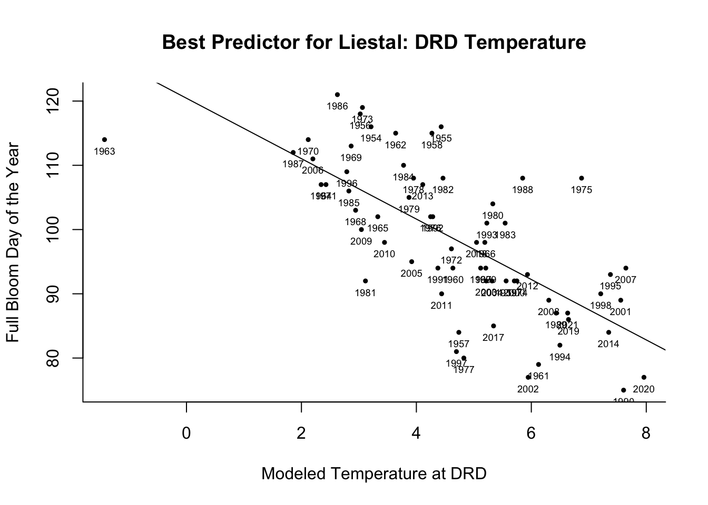
# check prediction accuracy:
pbloomL2 <- predict(mAllL2, newdata = data.frame(year = dat_lies$year,
DRD = dat_lies$DRD, t.pred = dat_lies$t.pred, mean.jan = dat_lies$t.pred))
rmse(dat_lies$bloom_doy, pbloomL2) # 6.71## [1] 6.710888mae(dat_lies$bloom_doy, pbloomL2) # 5.06## [1] 5.055577cor(dat_lies$bloom_doy, pbloomL2) # 0.82## [1] 0.8213246### Predict Bloom Date 2023
data23_Lies <- data.frame(year = 2023, DRD = DRD23_Lies, t.pred = tpred23_Lies,
mean.jan = j23_Lies)
predict(mAllL2, newdata = data23_Lies) # 92.70## 1
## 92.67955doy_to_date(2023, 92)## [1] "2023-04-02"My prediction for Liestal is April 2nd 2023
cherry_kyot <- subset(cherry, location == "kyoto")
# now use data from temperature data set: temp_kyot
dat_kyot <- merge(cherry_kyot, temp_Kyot, by = "year")
mYearK <- lm(bloom_doy ~ year, dat_kyot)
# summary(mYearK) # R^2 = 0.28
mDRDK <- lm(bloom_doy ~ DRD, dat_kyot)
# summary(mDRDK) # R^2 = 0.30
mtpredK <- lm(bloom_doy ~ t.pred, dat_kyot)
# summary(mtpredK) # R^2 = 0.05
mjanK <- lm(bloom_doy ~ mean.jan, dat_kyot)
# summary(mjanK) # R^2 = 0.06
mAllK <- lm(bloom_doy ~ year + DRD + t.pred + mean.jan, dat_kyot)
# summary(mAllK) # R^2 = 0.68
mAllK2 <- lm(bloom_doy ~ year + DRD * t.pred + mean.jan, dat_kyot)
summary(mAllK2) # R^2 = 0.70 -> I will take this model. ##
## Call:
## lm(formula = bloom_doy ~ year + DRD * t.pred + mean.jan, data = dat_kyot)
##
## Residuals:
## Min 1Q Median 3Q Max
## -5.8400 -1.5198 0.1328 1.4343 4.3702
##
## Coefficients:
## Estimate Std. Error t value Pr(>|t|)
## (Intercept) 175.06965 33.73361 5.190 2.55e-06 ***
## year -0.07431 0.01341 -5.542 6.76e-07 ***
## DRD 4.08154 0.92255 4.424 4.07e-05 ***
## t.pred 4.20800 2.18631 1.925 0.058934 .
## mean.jan 1.28888 0.37790 3.411 0.001155 **
## DRD:t.pred -0.34458 0.09896 -3.482 0.000926 ***
## ---
## Signif. codes: 0 '***' 0.001 '**' 0.01 '*' 0.05 '.' 0.1 ' ' 1
##
## Residual standard error: 2.134 on 61 degrees of freedom
## Multiple R-squared: 0.8043, Adjusted R-squared: 0.7882
## F-statistic: 50.13 on 5 and 61 DF, p-value: < 2.2e-16plot(bloom_doy ~ DRD, dat_kyot, cex = 0.5, pch = 19,
ylab = "Full Bloom Day of the Year", main = "Best Predictor for Kyoto: DRD",
xlab = "Dormacy Release Date", bty = "n")
box(bty = "L")
with(dat_kyot, text((bloom_doy -1) ~ DRD, labels = year, cex = 0.58))
abline(mDRDK)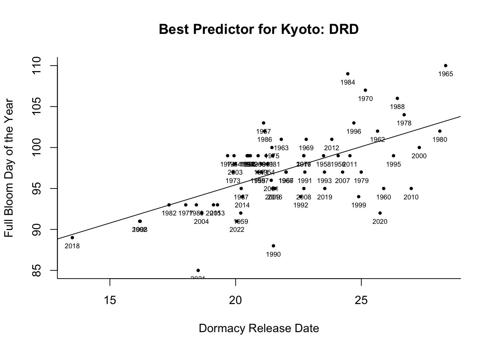
# check prediction accuracy:
pbloomK <- predict(mAllK2, newdata = data.frame(year = dat_kyot$year,
DRD = dat_kyot$DRD, t.pred = dat_kyot$t.pred, mean.jan = dat_kyot$t.pred))
rmse(dat_kyot$bloom_doy, pbloomK) # 2.30## [1] 2.301066mae(dat_kyot$bloom_doy, pbloomK) # 1.90## [1] 1.80004cor(dat_kyot$bloom_doy, pbloomK) # 0.87## [1] 0.8745281### Predict Bloom Date 2023
data23_Kyot <- data.frame(year = 2023, DRD = DRD23_Kyot, t.pred = tpred23_Kyot,
mean.jan = j23_Kyot)
predict(mAllK2, newdata = data23_Kyot) # 94.04## 1
## 94.04291doy_to_date(2023, 94)## [1] "2023-04-04"My prediction for Kyoto is April 4th 2023.
For Vancouver, we do not have historic bloom dates. I therefore try to predict these dates from the USA NPN dataset. To evaluate how good this works, I first do the same for Washington and compare the predicted with the actual dates.
dat <- read.csv("peak-bloom-prediction-main/data/USA-NPN_individual_phenometrics_data.csv")
dat$year <- dat$First_Yes_Year
dat$Species <- as.factor(dat$Species)
m_wash <- lm(First_Yes_DOY ~ year + Latitude + Longitude +
Elevation_in_Meters + Species, dat)
# get washigton mean winter (Dec - Feb) temperature for these years:
w_wash <- subset(weather, location == "Washington")
w_wash <- subset(w_wash, month(date) %in% c(12, 1, 2))
data_wash <- data.frame(year = unique(dat$year), Latitude = 38.8853,
Longitude = -77.0386, Elevation_in_Meters = 0,
Species = "yedoensis")
doy.pred <- predict(m_wash, newdata = data_wash)
doy.actual <- subset(cherry, year %in% unique(dat$year) & location == "washingtondc")$bloom_doy
doy <- data.frame(doy.pred = doy.pred, doy.actual = doy.actual,
year = unique(dat$year))
cor(doy.pred, doy.actual) # 0.19## [1] 0.1904998rmse(doy.pred, doy.actual) # 7.80## [1] 7.803118mae(doy.pred, doy.actual) # 6.85## [1] 6.85078plot(doy.pred ~ year, doy, ylim = c(80, 100), pch = 19, ylab =
"Bloom DOY (modeled / actual)", xlab = "Year", bty = "L",
main = "Modeled vs. actual bloom dates: Wahsington, D.C.")
points(doy.actual ~ year, doy, col = "red", pch = 19)
arrows(x0 = doy$year, x1 = doy$year, y0 = doy$doy.pred, y1 = doy$doy.actual,
length = 0, col = "red", lty = "dashed")
points(doy.pred ~ year, doy, col = "black", pch = 19)
legend("topright", legend = c("predicted", "actual"), title = "Washington D.C. Bloom DOY", bty = "n", col = c("black", "red"), pch = 19, cex = 0.6)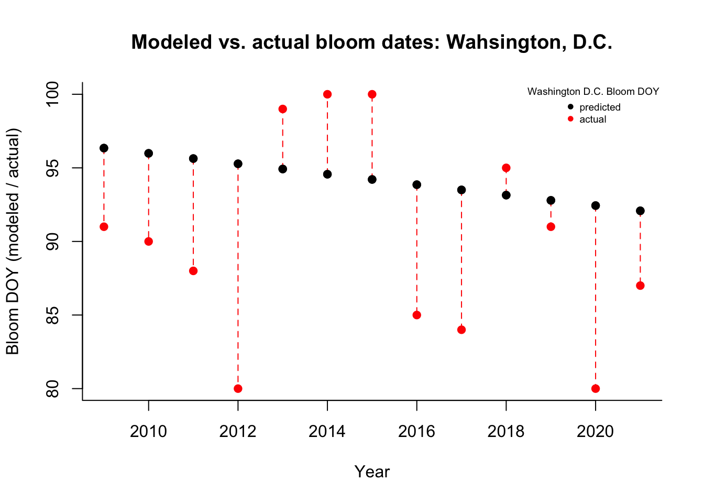
The predictions are on average wrong by 9 days which isn’t very good. However, I tried a few different things and nothing seemed to work better, so I will go with it.
I can now estimate the historic bloom dates in Vancouver from the available data.
m_vanc <- lm(First_Yes_DOY ~ year + Latitude + Longitude +
Elevation_in_Meters + Species, dat)
data_vanc <- data.frame(year = unique(dat$year), Latitude = 49.2237,
Longitude = -123.1636, Elevation_in_Meters = 24,
Species = "yedoensis")
doy.pred <- predict(m_vanc, newdata = data_vanc)
doy.pred## 1 2 3 4 5 6 7 8
## 110.6716 110.3165 109.9614 109.6063 109.2512 108.8962 108.5411 108.1860
## 9 10 11 12 13
## 107.8309 107.4758 107.1208 106.7657 106.4106data_vanc$bloom_doy <- doy.predWith these modeled bloom dates, I can now estimate the 2023 bloom date like I did for the other locations. But first, I have to estimate the Vancouver DRDs and calculate the past mean temperatures for January.
Vanc_2023 <- read.csv("peak-bloom-prediction-main/data/WeatherVancouver_2023.csv", sep = ",", header = TRUE)
# check whether both data sources match:
wGHCN <- subset(weather, location == "Vancouver" &
date >= as.Date("2022-10-01") & date <=
as.Date("2022-10-31"))$tmax / 10
wVC <- subset(Vanc_2023, as.Date(datetime) >= as.Date("2022-10-01") & as.Date(datetime) <= as.Date("2022-10-31"))$tempmax
cor(wGHCN, wVC, use = "complete.obs") # correlation is very high -> everything okay!## [1] 0.978233Vanc_2023$doy <- yday(as.Date(Vanc_2023$datetime))
Vanc_2023$doy.n <- -91:32
Vanc_2023$tmax <- Vanc_2023$tempmax
mw_Vanc <- subset(aggregate(tmax ~ doy, subset(weather_Vanc, year >= 2013), mean),
doy %in% 33:152)
mw_Vanc$tmax <- mw_Vanc$tmax / 10
w23_Vanc <- Vanc_2023[, c("doy.n", "tmax")]
names(mw_Vanc) <- c("doy.n", "tmax")
w_Vanc <- rbind(w23_Vanc, mw_Vanc)
# fit quadratic regression with specified weights:
weights <- rep(c(1, 0.2), c(124, 89))
fit23_Vanc <- lm(tmax ~ doy.n + I(doy.n^2), w_Vanc, weights = weights)
coefs23_Vanc <- coef(fit23_Vanc)
doy.p <- -91: 152
fit.p_Vanc <- predict(fit23_Vanc, newdata = data.frame(doy.n = doy.p))
fun23_Vanc <- function(x){
coefs23_Vanc[1] + coefs23_Vanc[2]*x + coefs23_Vanc[3]*x^2
}
DRD23_Vanc <- as.numeric(optimize(fun23_Vanc, interval = c(1, 365),
maximum = FALSE)[1])
t.DRD23_Vanc <- w_Vanc[w_Vanc$doy.n == round(DRD23_Vanc), ]$tmax
tpred23_Vanc <- as.numeric(optimize(fun23_Vanc, interval = c(1, 365),
maximum = FALSE)[2])
with(subset(w_Vanc, doy.n <= 60),
plot(tmax ~ doy.n, ylab = "Maximum Temperature (°Celsius)",
xlab = "Day of the Year", pch = 19, cex = 0.8,
xlim = c(-91, 150), bty = "L",
main = "Predicted 2023 DRD: Vancington, D.C."))
with(subset(w_Vanc, doy.n > 60),
points(tmax ~ doy.n, pch = 19, col = alpha("grey", alpha = 0.8)))
lines(fit.p_Vanc ~ doy.p, col = "forestgreen", lwd = 2)
abline(v = DRD23_Vanc, col = "red")
text(DRD23_Vanc, 20, "Dormacy Release Date", cex = 0.6, col = "red", pos = 4)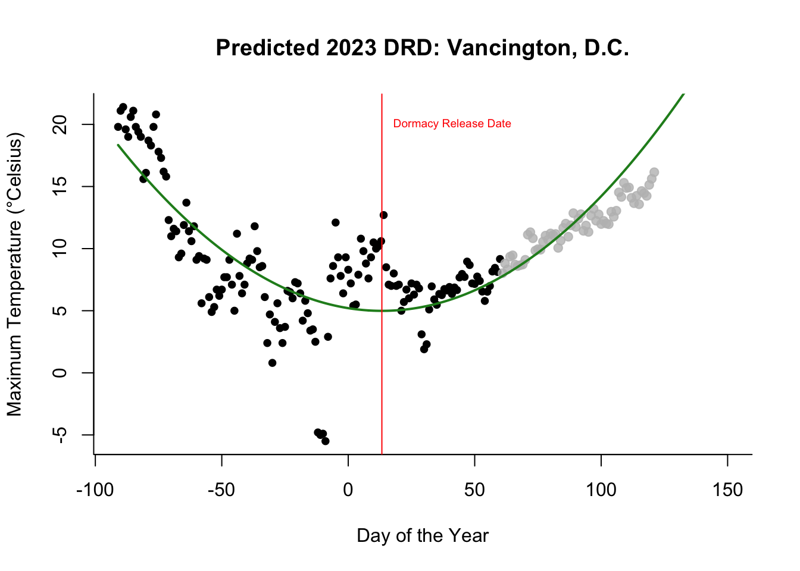
DRD_Vanc <- c(DRD_Vancouver, DRD23_Vanc)
t.pred_Vanc <- c(temp_Vanc$t.pred, tpred23_Vanc)
# Calculate mean January temperature
j23_Vanc <- mean(subset(Vanc_2023, as.Date(datetime) >= as.Date("2023-01-01") &
as.Date(datetime) <= as.Date("2023-01-31"))$tempmax) I now have all the data to predict the 2023 bloom date in Vancouver.
dat_Vanc <- merge(data_vanc, temp_Vanc, by = "year")
### Different Models
mYearV <- lm(bloom_doy ~ year, dat_Vanc)
# summary(mYearV) # R^2 = 1
# This leads to a perfect fit since the bloom_doys themselves are predicted with
# year as only varying predictor
mDRDV <- lm(bloom_doy ~ DRD, dat_Vanc)
# summary(mDRDV) # R^2 <.01
mtpredV <- lm(bloom_doy ~ t.pred, dat_Vanc)
# summary(mtpredV) # R^2 = 0.04
mjanV <- lm(bloom_doy ~ mean.jan, dat_Vanc)
# summary(mjanV) # R^2 = .05
mAllV <- lm(bloom_doy ~ DRD * t.pred + mean.jan, dat_Vanc)
summary(mAllV) # R^2 = 0.21##
## Call:
## lm(formula = bloom_doy ~ DRD * t.pred + mean.jan, data = dat_Vanc)
##
## Residuals:
## Min 1Q Median 3Q Max
## -1.7354 -0.9772 -0.1433 1.1972 1.6510
##
## Coefficients:
## Estimate Std. Error t value Pr(>|t|)
## (Intercept) 97.8395 12.2515 7.986 4.42e-05 ***
## DRD 0.7078 0.8555 0.827 0.432
## t.pred 2.2078 1.8068 1.222 0.257
## mean.jan -0.5672 0.5020 -1.130 0.291
## DRD:t.pred -0.1070 0.1212 -0.883 0.403
## ---
## Signif. codes: 0 '***' 0.001 '**' 0.01 '*' 0.05 '.' 0.1 ' ' 1
##
## Residual standard error: 1.508 on 8 degrees of freedom
## Multiple R-squared: 0.2072, Adjusted R-squared: -0.1892
## F-statistic: 0.5227 on 4 and 8 DF, p-value: 0.7225# I will use the model with everything but year as predictors.
plot(bloom_doy ~ mean.jan, dat_Vanc, cex = 0.5, pch = 19,
ylab = "Full Bloom Day of the Year",
xlab = "Mean January Temperature", bty = "L",
main = "Best Predictor for Vancouver: Mean January Temperature")
abline(mjanV)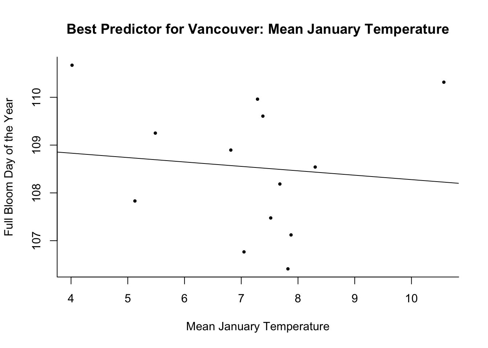
# check prediction accuracy:
pbloomV <- predict(mAllV, newdata = data.frame(year = dat_Vanc$year,
DRD = dat_Vanc$DRD, t.pred = dat_Vanc$t.pred, mean.jan = dat_Vanc$t.pred))
rmse(dat_Vanc$bloom_doy, pbloomV) # 1.32## [1] 1.324166mae(dat_Vanc$bloom_doy, pbloomV) # 1.16 ## [1] 1.160269cor(dat_Vanc$bloom_doy, pbloomV) #0.26## [1] 0.2683932# of course, this needs to be interpreted with caution, since the DV (past blooom
# dates) are not the real ones.
### Predict Bloom Date 2023
data23_Vanc <- data.frame(year = 2023, DRD = DRD23_Vanc, t.pred = tpred23_Vanc,
mean.jan = j23_Vanc)
predict(mYearV, newdata = data23_Vanc) # 1105.7## 1
## 105.7004doy_to_date(2023, 105)## [1] "2023-04-15"My prediction for Vancouver is April 15th, 2023.